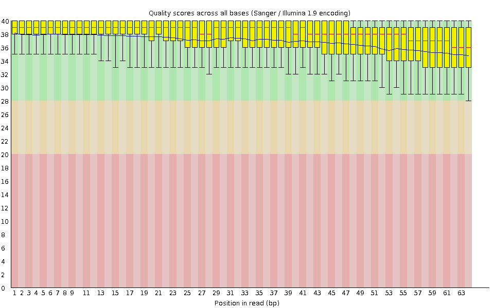
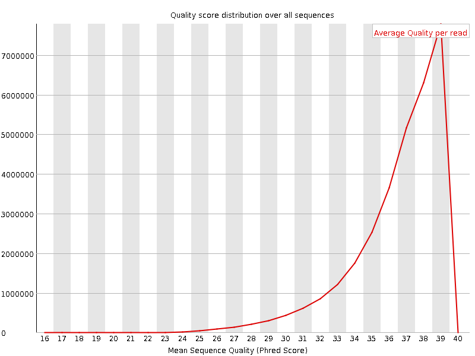
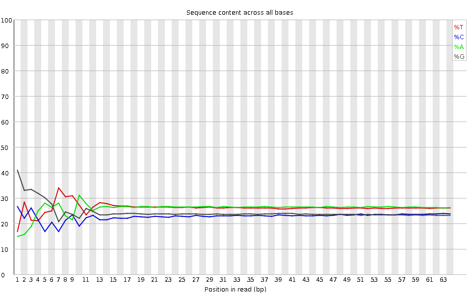
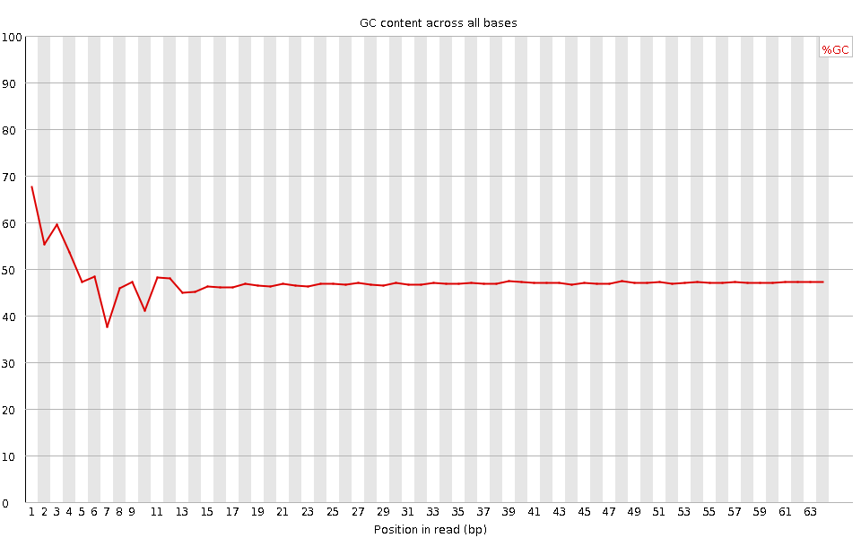
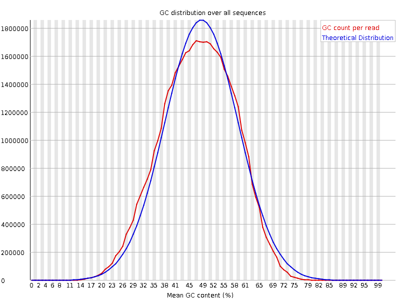
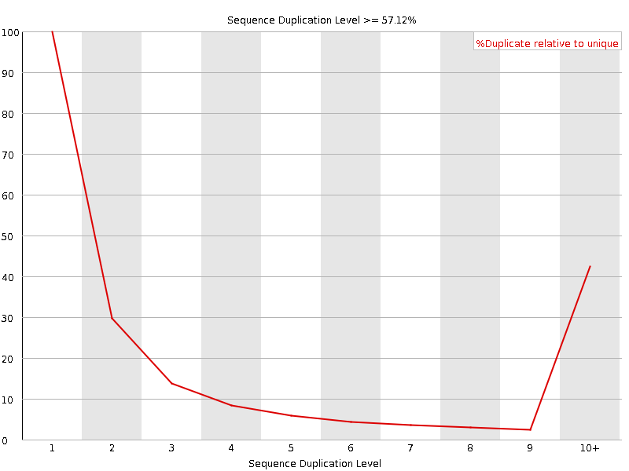
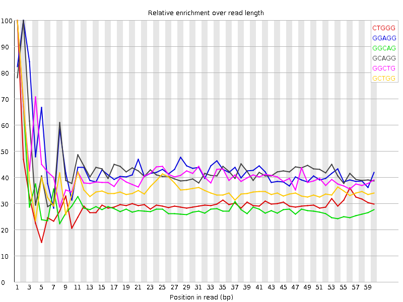

![[OK]](Icons/tick.png) Basic Statistics
Basic Statistics
| Measure | Value |
|---|---|
| Filename | SRR315324_pe_1.f.fastq |
| File type | Conventional base calls |
| Encoding | Sanger / Illumina 1.9 |
| Total Sequences | 31239747 |
| Filtered Sequences | 0 |
| Sequence length | 64 |
| %GC | 47 |
Per base sequence quality

Per sequence quality scores

![[FAIL]](Icons/error.png) Per base sequence content
Per base sequence content

Per base GC content

Per sequence GC content

Per base N content

Sequence Length Distribution

Sequence Duplication Levels

Overrepresented sequences
No overrepresented sequences
![[WARN]](Icons/warning.png) Kmer Content
Kmer Content

| Sequence | Count | Obs/Exp Overall | Obs/Exp Max | Max Obs/Exp Position |
|---|---|---|---|---|
| CTGGG | 4135475 | 2.450895 | 8.065156 | 1 |
| GGAGG | 4196480 | 2.3348587 | 5.2887173 | 2 |
| GGCAG | 3679300 | 2.1962626 | 7.500649 | 1 |
| GCAGG | 3676340 | 2.1944957 | 5.07469 | 2 |
| GGCTG | 3629125 | 2.1508062 | 5.185937 | 1 |
| GCTGG | 3601315 | 2.1343246 | 5.895696 | 1 |
| GCCAG | 3195740 | 2.0466056 | 5.3258977 | 1 |
| GGGAG | 3565180 | 1.9836128 | 6.640232 | 1 |
| GGCCA | 3000685 | 1.921689 | 5.2669153 | 1 |
| GGGCA | 3208975 | 1.9155142 | 5.9082937 | 1 |
| TGGGG | 3419115 | 1.8887281 | 5.5713673 | 2 |
| GGGGG | 3159655 | 1.8662575 | 10.16359 | 1 |
| GGGGA | 3213430 | 1.7879043 | 8.917794 | 1 |
| GGGAA | 3296420 | 1.7276728 | 6.5779467 | 1 |
| GTGGG | 2908265 | 1.6065333 | 7.565651 | 1 |
| GGGTG | 2886740 | 1.5946426 | 5.4023314 | 2 |
| GGGGC | 2418545 | 1.5326031 | 5.4828596 | 2 |
| GGGGT | 2753945 | 1.5212864 | 6.5675144 | 3 |
| GTGGA | 2218005 | 1.1541488 | 5.1563487 | 1 |
| CGGGG | 1582740 | 1.0029634 | 9.470721 | 1 |
| GCGGG | 933485 | 0.59153825 | 5.005692 | 1 |